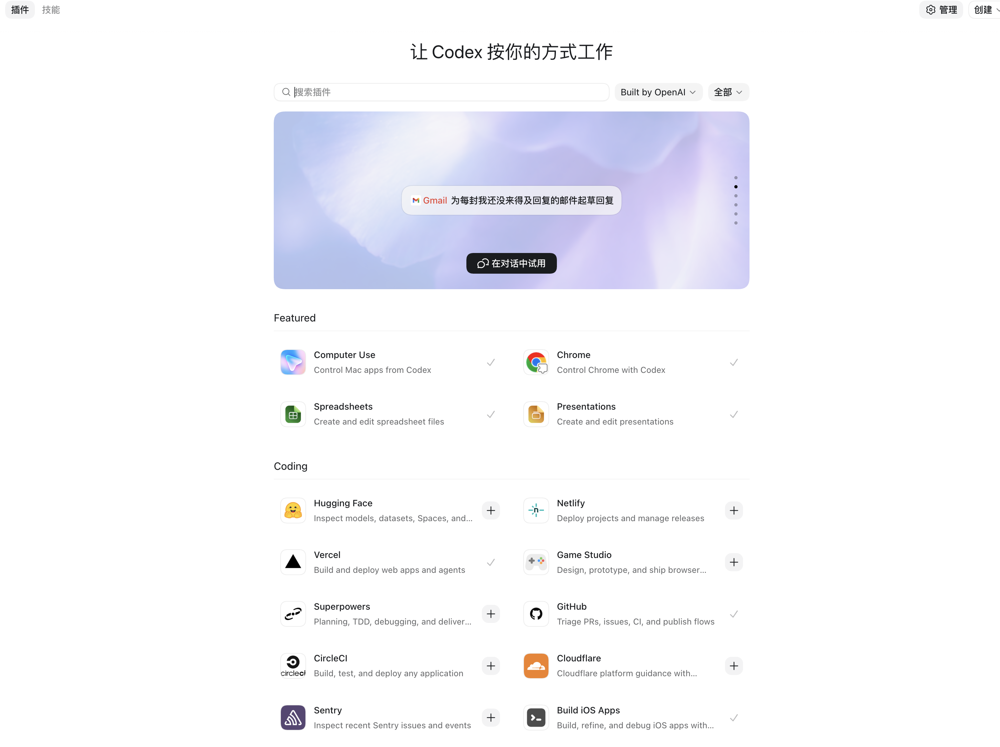

<template id="seg07-shichang-template">
  <div data-composition-id="seg07-shichang" data-width="1920" data-height="1080">
    <style>
      [data-composition-id="seg07-shichang"] {
        position: absolute;
        top: 0; left: 0;
        width: 1920px;
        height: 1080px;
        background: transparent;
        color: #2B2622;
        font-family: "Noto Sans SC", "Inter", sans-serif;
      }
      [data-composition-id="seg07-shichang"] .sec {
        position: absolute;
        top: 0; left: 0;
        width: 1920px;
        height: 1080px;
      }
      [data-composition-id="seg07-shichang"] .scene-content {
        width: 100%;
        height: 100%;
        box-sizing: border-box;
        position: relative;
      }

      /* ── 通用字效 ── */
      [data-composition-id="seg07-shichang"] .chrome {
        font-family: "Noto Sans SC", "Inter", sans-serif;
        font-weight: 800;
        letter-spacing: 0.005em;
        line-height: 1.05;
        background-image: linear-gradient(180deg,
          #2B2622 0%, #4a3d33 18%, #806c5b 43%, #c8aa8f 52%, #6b5a4d 67%, #2B2622 100%);
        -webkit-background-clip: text;
        background-clip: text;
        -webkit-text-fill-color: transparent;
        color: transparent;
      }
      [data-composition-id="seg07-shichang"] .hot {
        background-image: linear-gradient(180deg, #f5b39a 0%, #d97757 48%, #8b3d28 100%);
        -webkit-background-clip: text;
        background-clip: text;
        -webkit-text-fill-color: transparent;
        color: transparent;
        filter: drop-shadow(0 0 18px rgba(217, 119, 87, 0.32));
      }
      [data-composition-id="seg07-shichang"] .mono {
        font-family: "JetBrains Mono", monospace;
      }
      [data-composition-id="seg07-shichang"] .chip {
        display: inline-flex;
        align-items: center;
        justify-content: center;
        gap: 8px;
        border-radius: 999px;
        border: 1.5px solid rgba(217, 119, 87, 0.48);
        background: rgba(217, 119, 87, 0.10);
        color: #9A4634;
        font-weight: 650;
        white-space: nowrap;
        padding: 0 18px;
        height: 36px;
        font-size: 18px;
      }
      [data-composition-id="seg07-shichang"] .chip.gray {
        border-color: rgba(90, 79, 70, 0.28);
        background: rgba(90, 79, 70, 0.06);
        color: #5A4F46;
      }
      [data-composition-id="seg07-shichang"] .chip.hot-solid {
        border-color: rgba(155, 70, 52, 0.95);
        background: #9A4634;
        color: #FFF7EE;
      }

      /* ── marker-sweep（复制 seg06 .a-marker-sweep）── */
      [data-composition-id="seg07-shichang"] .marker-sweep {
        position: absolute;
        top: 0;
        left: -100%;
        width: 100%;
        height: 100%;
        background: linear-gradient(90deg,
          transparent 0%,
          rgba(217, 119, 87, 0.25) 30%,
          rgba(217, 119, 87, 0.45) 50%,
          rgba(217, 119, 87, 0.25) 70%,
          transparent 100%);
        mix-blend-mode: multiply;
        pointer-events: none;
      }
      [data-composition-id="seg07-shichang"] .marker-sweep.gray {
        background: linear-gradient(90deg,
          transparent 0%,
          rgba(90, 79, 70, 0.22) 30%,
          rgba(90, 79, 70, 0.38) 50%,
          rgba(90, 79, 70, 0.22) 70%,
          transparent 100%);
      }

      /* ── SEC A · 排除立论 ── */
      [data-composition-id="seg07-shichang"] .a-bg-warm-deep {
        position: absolute;
        top: 0; left: 0;
        width: 1920px;
        height: 1080px;
        background: #F0E5D2;
        z-index: 0;
        opacity: 1;
      }

      /* 「01」callback 卡 */
      [data-composition-id="seg07-shichang"] .a-card-01 {
        position: absolute;
        top: 220px;
        left: 50%;
        transform: translateX(-50%);
        width: 600px;
        height: 380px;
        background: #F7F2EA;
        border: 2px solid rgba(217, 119, 87, 0.85);
        border-radius: 18px;
        box-shadow:
          0 28px 60px rgba(43, 38, 34, 0.10),
          0 0 50px rgba(217, 119, 87, 0.18);
        display: flex;
        flex-direction: column;
        align-items: center;
        justify-content: center;
        gap: 24px;
        z-index: 5;
        opacity: 0;
      }
      [data-composition-id="seg07-shichang"] .a-card-01-num {
        font-family: "Noto Sans SC", "Inter", sans-serif;
        font-size: 64px;
        font-weight: 800;
        color: rgba(154, 70, 52, 0.32);
        letter-spacing: 0.04em;
      }
      [data-composition-id="seg07-shichang"] .a-card-01-anthropic {
        width: 110px;
        height: auto;
      }
      [data-composition-id="seg07-shichang"] .a-card-01-anthropic img {
        width: 100%;
        height: auto;
        filter: drop-shadow(0 0 22px rgba(217, 119, 87, 0.55));
      }
      [data-composition-id="seg07-shichang"] .a-title {
        font-size: 60px;
        text-align: center;
        line-height: 1.1;
        opacity: 0;
      }
      [data-composition-id="seg07-shichang"] .a-card-01-pred-chip {
        position: absolute;
        top: -52px;
        left: 50%;
        transform: translateX(-50%);
        padding: 0 22px;
        height: 38px;
        font-size: 18px;
        font-weight: 700;
        opacity: 0;
      }

      /* 反面卡 2 张 */
      [data-composition-id="seg07-shichang"] .a-counter-row {
        position: absolute;
        top: 700px;
        left: 50%;
        transform: translateX(-50%);
        display: flex;
        gap: 60px;
        z-index: 5;
      }
      [data-composition-id="seg07-shichang"] .a-counter-card {
        position: relative;
        width: 280px;
        height: 140px;
        background: #F7F2EA;
        border: 1px solid rgba(90, 79, 70, 0.28);
        border-radius: 12px;
        display: flex;
        align-items: center;
        justify-content: center;
        font-size: 24px;
        font-weight: 600;
        color: rgba(90, 79, 70, 0.78);
        filter: grayscale(60%) opacity(0.7);
        opacity: 0;
      }
      [data-composition-id="seg07-shichang"] .a-cross {
        position: absolute;
        top: 50%;
        left: 50%;
        transform: translate(-50%, -50%) scale(1.4);
        font-size: 100px;
        font-weight: 900;
        line-height: 1;
        color: #d97757;
        opacity: 0;
        pointer-events: none;
      }

      [data-composition-id="seg07-shichang"] .a-not-valuable {
        position: absolute;
        top: 860px;
        left: 50%;
        transform: translateX(-50%);
        padding: 6px 28px;
        font-size: 22px;
        font-weight: 700;
        color: #5A4F46;
        background: rgba(90, 79, 70, 0.08);
        border: 1px solid rgba(90, 79, 70, 0.28);
        border-radius: 999px;
        overflow: hidden;
        opacity: 0;
      }

      /* GPTs / Gem logo 横排 */
      [data-composition-id="seg07-shichang"] .a-gpts-row {
        position: absolute;
        top: 940px;
        left: 50%;
        transform: translateX(-50%);
        display: flex;
        gap: 80px;
        align-items: center;
        z-index: 5;
      }
      [data-composition-id="seg07-shichang"] .a-gpts-item {
        display: flex;
        align-items: center;
        gap: 10px;
        opacity: 0;
      }
      [data-composition-id="seg07-shichang"] .a-gpts-item img {
        width: 32px;
        height: 32px;
        filter: grayscale(100%) opacity(0.55);
      }
      [data-composition-id="seg07-shichang"] .a-gpts-label {
        font-size: 16px;
        color: #5A4F46;
        font-weight: 600;
      }

      /* ── SEC B · 上下文包定义 ── */
      [data-composition-id="seg07-shichang"] .b-bg {
        position: absolute;
        top: 0; left: 0;
        width: 1920px;
        height: 1080px;
        background: #F7F2EA;
        z-index: 0;
      }
      [data-composition-id="seg07-shichang"] .b-icon {
        position: absolute;
        width: 240px;
        height: 280px;
        display: flex;
        flex-direction: column;
        align-items: center;
        justify-content: center;
        gap: 18px;
        opacity: 0;
      }
      [data-composition-id="seg07-shichang"] .b-icon svg {
        width: 200px;
        height: 200px;
      }
      [data-composition-id="seg07-shichang"] .b-icon-title {
        font-size: 34px;
        font-weight: 700;
        color: #5A4F46;
      }
      [data-composition-id="seg07-shichang"] .b-icon.hot-icon .b-icon-title {
        background-image: linear-gradient(180deg, #f5b39a 0%, #d97757 48%, #8b3d28 100%);
        -webkit-background-clip: text;
        background-clip: text;
        -webkit-text-fill-color: transparent;
        color: transparent;
      }

      /* 4 起始位（屏幕四象限中心 (480,270)/(1440,270)/(480,810)/(1440,810)，icon 240×280）+ 终态居中由 GSAP motionPath 控制 */
      [data-composition-id="seg07-shichang"] #b-skill    { left: 360px;  top: 130px; }
      [data-composition-id="seg07-shichang"] #b-workflow { left: 1320px; top: 130px; }
      [data-composition-id="seg07-shichang"] #b-memory   { left: 360px;  top: 670px; }
      [data-composition-id="seg07-shichang"] #b-eval     { left: 1320px; top: 670px; }

      /* 上下文包立方体（SEC B + SEC C 复用）*/
      [data-composition-id="seg07-shichang"] .cube {
        position: absolute;
        width: 240px;
        height: 240px;
        opacity: 0;
        z-index: 6;
      }
      [data-composition-id="seg07-shichang"] .cube svg {
        width: 100%;
        height: 100%;
        filter: drop-shadow(0 0 22px rgba(217, 119, 87, 0.40));
      }
      [data-composition-id="seg07-shichang"] .cube-label {
        position: absolute;
        top: 100%;
        left: 50%;
        transform: translateX(-50%);
        margin-top: 14px;
        white-space: nowrap;
        font-size: 20px;
        font-weight: 700;
        color: #9A4634;
        opacity: 0;
      }
      /* SEC B cube 中心 (960, 540)：屏幕正中 */
      [data-composition-id="seg07-shichang"] #b-cube { left: 840px; top: 420px; }

      /* 集市 UI 框（替换货架）—— 上方 search bar + 下方 6 tile 网格 */
      [data-composition-id="seg07-shichang"] .b-marketplace {
        position: absolute;
        left: 50%;
        transform: translateX(-50%);
        top: 720px;
        width: 700px;
        height: 200px;
        background: #FBF7EF;
        border: 1px solid rgba(90, 79, 70, 0.32);
        border-radius: 16px;
        padding: 16px;
        display: flex;
        flex-direction: column;
        gap: 12px;
        box-shadow: 0 18px 38px rgba(43, 38, 34, 0.08);
        opacity: 0;
        z-index: 5;
        box-sizing: border-box;
      }
      [data-composition-id="seg07-shichang"] .b-mkt-bar {
        display: flex;
        align-items: center;
        gap: 10px;
        padding: 8px 18px;
        background: rgba(90, 79, 70, 0.05);
        border: 1px solid rgba(90, 79, 70, 0.22);
        border-radius: 999px;
        font-family: "JetBrains Mono", monospace;
        font-size: 14px;
        color: rgba(90, 79, 70, 0.78);
        flex: 0 0 38px;
      }
      [data-composition-id="seg07-shichang"] .b-mkt-search-icon {
        font-size: 16px;
        color: #5A4F46;
      }
      [data-composition-id="seg07-shichang"] .b-mkt-grid {
        display: grid;
        grid-template-columns: repeat(6, 1fr);
        gap: 10px;
        flex: 1;
      }
      [data-composition-id="seg07-shichang"] .b-mkt-tile {
        background: rgba(217, 119, 87, 0.06);
        border: 1px solid rgba(217, 119, 87, 0.32);
        border-radius: 8px;
      }
      [data-composition-id="seg07-shichang"] .b-market-chip {
        position: absolute;
        left: 50%;
        transform: translateX(-50%);
        top: 940px;
        opacity: 0;
      }

      /* motionPath svg overlay（隐形）*/
      [data-composition-id="seg07-shichang"] .paths-svg {
        position: absolute;
        top: 0; left: 0;
        width: 1920px;
        height: 1080px;
        pointer-events: none;
        z-index: 0;
        opacity: 0;
      }

      /* ── SEC C · 会计→财务 ── */
      [data-composition-id="seg07-shichang"] .c-bg {
        position: absolute;
        top: 0; left: 0;
        width: 1920px;
        height: 1080px;
        background: #F7F2EA;
        z-index: 0;
      }
      /* 左区会计 */
      [data-composition-id="seg07-shichang"] .c-accountant {
        position: absolute;
        top: 240px;
        left: 140px;
        width: 380px;
        height: 360px;
        display: flex;
        flex-direction: column;
        align-items: center;
        gap: 16px;
        opacity: 0;
      }
      [data-composition-id="seg07-shichang"] .c-person-svg {
        width: 110px;
        height: 130px;
      }
      [data-composition-id="seg07-shichang"] .c-laptop-svg {
        width: 220px;
        height: 130px;
      }
      [data-composition-id="seg07-shichang"] .c-role-chip {
        margin-top: 4px;
      }

      /* 4 SOP 文档 */
      [data-composition-id="seg07-shichang"] .c-docs-row {
        position: absolute;
        top: 220px;
        left: 540px;
        width: 820px;
        height: 200px;
        display: flex;
        align-items: center;
        gap: 20px;
        z-index: 5;
      }
      [data-composition-id="seg07-shichang"] .c-doc {
        position: relative;
        width: 180px;
        height: 200px;
        background: #FBF7EF;
        border: 1px solid rgba(90, 79, 70, 0.28);
        border-radius: 10px;
        display: flex;
        flex-direction: column;
        align-items: center;
        justify-content: center;
        gap: 10px;
        opacity: 0;
      }
      [data-composition-id="seg07-shichang"] .c-doc-icon {
        width: 50px;
        height: 60px;
      }
      [data-composition-id="seg07-shichang"] .c-doc-title {
        font-size: 18px;
        font-weight: 700;
        color: #5A4F46;
        text-align: center;
      }
      [data-composition-id="seg07-shichang"] .c-docs-link {
        position: absolute;
        top: 200px;
        left: 540px;
        width: 820px;
        height: 12px;
        z-index: 4;
        opacity: 0;
      }

      /* SEC C 上下文包立方体（中央 morph 收纳点，cube 240×240 → 中心 (960, 350)）*/
      [data-composition-id="seg07-shichang"] #c-cube {
        left: 840px;
        top: 230px;
      }
      [data-composition-id="seg07-shichang"] #c-cube .cube-label {
        margin-top: 18px;
        background: rgba(217, 119, 87, 0.10);
        border: 1px solid rgba(217, 119, 87, 0.48);
        border-radius: 999px;
        padding: 4px 16px;
      }

      /* 右区财务 */
      [data-composition-id="seg07-shichang"] .c-finance {
        position: absolute;
        top: 240px;
        right: 140px;
        width: 380px;
        height: 360px;
        display: flex;
        flex-direction: column;
        align-items: center;
        gap: 16px;
        opacity: 0;
      }
      [data-composition-id="seg07-shichang"] .c-finance-laptop {
        position: relative;
        width: 320px;
        height: 220px;
      }
      [data-composition-id="seg07-shichang"] .c-finance-laptop-svg {
        width: 100%;
        height: 100%;
        position: absolute;
        top: 0;
        left: 0;
      }

      /* SEC C 小集市 callback（缩到中下方）*/
      [data-composition-id="seg07-shichang"] .c-shelf {
        position: absolute;
        top: 480px;
        left: 50%;
        transform: translateX(-50%);
        width: 320px;
        height: 96px;
        background: #FBF7EF;
        border: 1px solid rgba(90, 79, 70, 0.32);
        border-radius: 12px;
        padding: 10px;
        box-sizing: border-box;
        display: flex;
        flex-direction: column;
        gap: 6px;
        box-shadow: 0 12px 24px rgba(43, 38, 34, 0.06);
        opacity: 0;
        z-index: 4;
      }
      [data-composition-id="seg07-shichang"] .c-shelf-bar {
        height: 22px;
        background: rgba(90, 79, 70, 0.05);
        border: 1px solid rgba(90, 79, 70, 0.20);
        border-radius: 999px;
      }
      [data-composition-id="seg07-shichang"] .c-shelf-grid {
        display: grid;
        grid-template-columns: repeat(6, 1fr);
        gap: 6px;
        flex: 1;
      }
      [data-composition-id="seg07-shichang"] .c-shelf-tile {
        background: rgba(217, 119, 87, 0.10);
        border: 1px solid rgba(217, 119, 87, 0.40);
        border-radius: 4px;
      }

      /* SEC C cc-window 嵌入财务电脑屏幕（laptop SVG 屏幕区域 40,30 → 280,160）*/
      [data-composition-id="seg07-shichang"] .c-cc-window {
        position: absolute;
        top: 30px;
        left: 40px;
        width: 240px;
        height: 130px;
        background: linear-gradient(180deg, #0d0d12 0%, #08080c 100%);
        border: 1px solid rgba(255, 255, 255, 0.10);
        border-radius: 6px;
        box-shadow:
          0 8px 18px rgba(0, 0, 0, 0.32),
          0 0 22px rgba(217, 119, 87, 0.36);
        overflow: hidden;
        opacity: 0;
        z-index: 7;
        box-sizing: border-box;
      }
      [data-composition-id="seg07-shichang"] .c-cc-chrome {
        display: flex;
        align-items: center;
        gap: 5px;
        padding: 4px 8px;
        background: linear-gradient(180deg, #1b1b22, #131319);
        border-bottom: 1px solid rgba(255, 255, 255, 0.05);
      }
      [data-composition-id="seg07-shichang"] .c-cc-dot {
        width: 7px;
        height: 7px;
        border-radius: 50%;
      }
      [data-composition-id="seg07-shichang"] .c-cc-dot.r { background: #ff5f57; }
      [data-composition-id="seg07-shichang"] .c-cc-dot.y { background: #febc2e; }
      [data-composition-id="seg07-shichang"] .c-cc-dot.g { background: #28c840; }
      [data-composition-id="seg07-shichang"] .c-cc-title {
        flex: 1;
        text-align: center;
        font-family: "JetBrains Mono", monospace;
        font-size: 9px;
        color: rgba(255, 255, 255, 0.52);
      }
      [data-composition-id="seg07-shichang"] .c-cc-body {
        padding: 10px 12px;
        font-family: "JetBrains Mono", monospace;
        font-size: 11px;
        line-height: 1.45;
        color: rgba(255, 255, 255, 0.92);
        word-break: break-all;
      }
      [data-composition-id="seg07-shichang"] .c-cc-caret {
        color: #5eead4;
        font-weight: 700;
        margin-right: 8px;
      }
      [data-composition-id="seg07-shichang"] .c-cc-cmd { color: #fff; }
      [data-composition-id="seg07-shichang"] .c-cc-arg { color: #fde68a; }
      [data-composition-id="seg07-shichang"] .c-cc-cursor {
        display: inline-block;
        margin-left: 2px;
        color: #5eead4;
        animation: cc-blink 0.9s steps(1) infinite;
      }
      @keyframes cc-blink {
        0%, 49% { opacity: 1; }
        50%, 100% { opacity: 0; }
      }

      /* SEC C hero chrome 大字 */
      [data-composition-id="seg07-shichang"] .c-hero {
        position: absolute;
        top: 720px;
        left: 50%;
        transform: translateX(-50%);
        font-size: 96px;
        white-space: nowrap;
        text-align: center;
        opacity: 0;
        z-index: 10;
        filter: blur(14px);
      }
      [data-composition-id="seg07-shichang"] .c-hero-note {
        position: absolute;
        top: 860px;
        left: 50%;
        transform: translateX(-50%);
        font-size: 22px;
        color: #5A4F46;
        font-weight: 600;
        white-space: nowrap;
        opacity: 0;
      }

      /* ── SEC D · Codex + 收束 ── */
      [data-composition-id="seg07-shichang"] .d-bg {
        position: absolute;
        top: 0; left: 0;
        width: 1920px;
        height: 1080px;
        background: #F7F2EA;
        z-index: 0;
      }
      [data-composition-id="seg07-shichang"] .d-natural {
        position: absolute;
        top: 160px;
        left: 50%;
        transform: translateX(-50%);
        font-size: 38px;
        white-space: nowrap;
        opacity: 0;
      }
      [data-composition-id="seg07-shichang"] .d-callback-row {
        position: absolute;
        top: 240px;
        left: 50%;
        transform: translateX(-50%);
        display: flex;
        align-items: center;
        gap: 14px;
        opacity: 0;
      }
      [data-composition-id="seg07-shichang"] .d-mini-01 {
        width: 80px;
        height: 60px;
        background: #FBF7EF;
        border: 1px solid rgba(90, 79, 70, 0.28);
        border-radius: 8px;
        display: flex;
        align-items: center;
        justify-content: center;
        font-size: 32px;
        font-weight: 800;
        color: #9A4634;
      }
      [data-composition-id="seg07-shichang"] .d-callback-label {
        font-size: 16px;
        color: #5A4F46;
        font-weight: 600;
      }

      /* Codex 卡 */
      [data-composition-id="seg07-shichang"] .d-codex-card {
        position: absolute;
        top: 340px;
        left: 50%;
        transform: translateX(-50%);
        width: 720px;
        height: 540px;
        background: #FBF7EF;
        border: 1px solid rgba(217, 119, 87, 0.85);
        border-radius: 16px;
        box-shadow:
          0 28px 60px rgba(43, 38, 34, 0.12),
          0 0 38px rgba(217, 119, 87, 0.18);
        opacity: 0;
        overflow: hidden;
      }
      [data-composition-id="seg07-shichang"] .d-codex-header {
        position: absolute;
        top: 20px;
        left: 24px;
        display: flex;
        align-items: center;
        gap: 12px;
      }
      [data-composition-id="seg07-shichang"] .d-codex-header img {
        width: 32px;
        height: 32px;
      }
      [data-composition-id="seg07-shichang"] .d-codex-header .chip {
        height: 32px;
        font-size: 16px;
      }
      [data-composition-id="seg07-shichang"] .d-codex-title {
        position: absolute;
        top: 76px;
        left: 0;
        right: 0;
        text-align: center;
        font-size: 40px;
        opacity: 0;
      }
      [data-composition-id="seg07-shichang"] .d-codex-shot-wrap {
        position: absolute;
        top: 152px;
        left: 50%;
        transform: translateX(-50%);
        width: 540px;
        height: 304px;
        border: 1px solid rgba(90, 79, 70, 0.18);
        border-radius: 10px;
        overflow: hidden;
        background: #fff;
        opacity: 0;
      }
      [data-composition-id="seg07-shichang"] .d-codex-shot-wrap img {
        width: 100%;
        height: 100%;
        object-fit: cover;
        object-position: top center;
      }
      [data-composition-id="seg07-shichang"] .d-marker-tab {
        position: absolute;
        top: 0;
        left: -100%;
        width: 35%;
        height: 14%;
        background: linear-gradient(90deg,
          transparent 0%,
          rgba(217, 119, 87, 0.30) 30%,
          rgba(217, 119, 87, 0.55) 50%,
          rgba(217, 119, 87, 0.30) 70%,
          transparent 100%);
        mix-blend-mode: multiply;
        pointer-events: none;
      }
      [data-composition-id="seg07-shichang"] .d-marker-tile {
        position: absolute;
        top: 56%;
        left: -100%;
        width: 100%;
        height: 44%;
        background: linear-gradient(90deg,
          transparent 0%,
          rgba(217, 119, 87, 0.20) 30%,
          rgba(217, 119, 87, 0.42) 50%,
          rgba(217, 119, 87, 0.20) 70%,
          transparent 100%);
        mix-blend-mode: multiply;
        pointer-events: none;
      }
      [data-composition-id="seg07-shichang"] .d-codex-spec {
        position: absolute;
        left: 50%;
        transform: translateX(-50%);
        font-size: 18px;
        color: #5A4F46;
        font-weight: 600;
        opacity: 0;
        white-space: nowrap;
      }
      [data-composition-id="seg07-shichang"] .d-codex-spec-1 { top: 466px; }
      [data-composition-id="seg07-shichang"] .d-codex-spec-2 { top: 498px; }

      [data-composition-id="seg07-shichang"] .d-must-follow {
        position: absolute;
        top: 916px;
        left: 50%;
        transform: translateX(-50%);
        font-size: 44px;
        white-space: nowrap;
        opacity: 0;
        overflow: visible;
      }
      [data-composition-id="seg07-shichang"] .d-must-follow .marker-sweep {
        position: absolute;
        top: 0;
        left: -100%;
        width: 100%;
        height: 100%;
      }
      /* d-better 不复用 .chip.hot-solid（避免 specificity 冲突）—— 独立完整定义 */
      [data-composition-id="seg07-shichang"] .d-better {
        position: absolute;
        top: 990px;
        left: 50%;
        transform: translateX(-50%);
        display: inline-flex;
        align-items: center;
        justify-content: center;
        gap: 8px;
        height: 36px;
        padding: 0 22px;
        border-radius: 999px;
        border: 1.5px solid rgba(155, 70, 52, 0.95);
        background: #9A4634;
        color: #FFF7EE;
        font-weight: 700;
        font-size: 18px;
        white-space: nowrap;
        opacity: 0;
      }

      /* SEC A 起始 visible，其他 SEC 起始 hidden（GSAP 后续控制）*/
      [data-composition-id="seg07-shichang"] .sec.sec-a { opacity: 1; }
      [data-composition-id="seg07-shichang"] .sec.sec-b,
      [data-composition-id="seg07-shichang"] .sec.sec-c,
      [data-composition-id="seg07-shichang"] .sec.sec-d { opacity: 0; }
    </style>

    <!-- ═════════ SEC A · 排除立论 (0-23.5s) ═════════ -->
    <div class="sec sec-a">
      <div class="scene-content">
        <div class="a-bg-warm-deep"></div>

        <!-- 「01」callback 卡 -->
        <div class="a-card-01">
          <div class="a-card-01-pred-chip chip hot-solid">预测 1 · prediction 1</div>
          <div class="a-card-01-num">01</div>
          <div class="a-card-01-anthropic">
            
          </div>
          <div class="a-title chrome">上下文集市</div>
        </div>

        <!-- 反面卡 2 张 -->
        <div class="a-counter-row">
          <div class="a-counter-card a-counter-1">
            营销文案模板
            <div class="a-cross">✕</div>
          </div>
          <div class="a-counter-card a-counter-2">
            客服 prompt agent
            <div class="a-cross">✕</div>
          </div>
        </div>

        <!-- 不值钱 chip + marker sweep -->
        <div class="a-not-valuable">
          不值钱 · not valuable
          <div class="marker-sweep gray"></div>
        </div>

        <!-- GPTs / Gem logo 横排 -->
        <div class="a-gpts-row">
          <div class="a-gpts-item a-gpts-gemini">
            
            <span class="a-gpts-label">Google Gem · 他们很早就在做</span>
          </div>
          <div class="a-gpts-item a-gpts-openai">
            
            <span class="a-gpts-label">GPTs · 他们很早就在做</span>
          </div>
        </div>
      </div>
    </div>

    <!-- ═════════ SEC B · 上下文包定义 (23.5-33.6s) ═════════ -->
    <div class="sec sec-b">
      <div class="scene-content">
        <div class="b-bg"></div>

        <!-- motionPath svg（隐形）-->
        <svg class="paths-svg" viewBox="0 0 1920 1080" xmlns="http://www.w3.org/2000/svg">
          <!-- 4 子图标 → 中心立方体（Bezier 曲线汇流，path 起点对齐 icon 中心，终点统一 (960,540)）-->
          <path id="b-path-skill"    d="M 480,270 C 600,400 760,480 960,540" fill="none" stroke="transparent"/>
          <path id="b-path-workflow" d="M 1440,270 C 1320,400 1160,480 960,540" fill="none" stroke="transparent"/>
          <path id="b-path-memory"   d="M 480,810 C 600,700 760,600 960,540" fill="none" stroke="transparent"/>
          <path id="b-path-eval"     d="M 1440,810 C 1320,700 1160,600 960,540" fill="none" stroke="transparent"/>
          <!-- 立方体 → 集市（中心 540 → 集市框中心 820）-->
          <path id="b-path-cube-shelf" d="M 960,540 C 960,650 960,750 960,820" fill="none" stroke="transparent"/>
        </svg>

        <!-- skill 图标 -->
        <div class="b-icon hot-icon" id="b-skill">
          <svg viewBox="0 0 68 68" fill="none">
            <!-- 齿轮 -->
            <circle cx="34" cy="34" r="20" stroke="#d97757" stroke-width="2.5"/>
            <circle cx="34" cy="34" r="10" stroke="#d97757" stroke-width="2.5"/>
            <g stroke="#d97757" stroke-width="2.5" stroke-linecap="round">
              <line x1="34" y1="6"  x2="34" y2="14"/>
              <line x1="34" y1="54" x2="34" y2="62"/>
              <line x1="6"  y1="34" x2="14" y2="34"/>
              <line x1="54" y1="34" x2="62" y2="34"/>
              <line x1="14" y1="14" x2="20" y2="20"/>
              <line x1="48" y1="48" x2="54" y2="54"/>
              <line x1="14" y1="54" x2="20" y2="48"/>
              <line x1="48" y1="20" x2="54" y2="14"/>
            </g>
          </svg>
          <div class="b-icon-title">skill</div>
        </div>

        <!-- 工作流 图标 -->
        <div class="b-icon" id="b-workflow">
          <svg viewBox="0 0 68 68" fill="none" stroke="#5A4F46" stroke-width="2.5" stroke-linecap="round" stroke-linejoin="round">
            <circle cx="14" cy="34" r="7"/>
            <circle cx="34" cy="34" r="7"/>
            <circle cx="54" cy="34" r="7"/>
            <line x1="21" y1="34" x2="27" y2="34"/>
            <line x1="41" y1="34" x2="47" y2="34"/>
            <polyline points="44,30 48,34 44,38"/>
          </svg>
          <div class="b-icon-title">工作流</div>
        </div>

        <!-- 项目记忆 图标 -->
        <div class="b-icon" id="b-memory">
          <svg viewBox="0 0 68 68" fill="none" stroke="#5A4F46" stroke-width="2.5" stroke-linecap="round" stroke-linejoin="round">
            <!-- 文件夹 -->
            <path d="M10 22 L24 22 L28 18 L58 18 L58 52 L10 52 Z"/>
            <!-- brain 简化为 3 个小圆 -->
            <circle cx="26" cy="38" r="4" fill="#5A4F46" stroke="none"/>
            <circle cx="34" cy="34" r="4" fill="#5A4F46" stroke="none"/>
            <circle cx="42" cy="38" r="4" fill="#5A4F46" stroke="none"/>
            <line x1="26" y1="38" x2="34" y2="34"/>
            <line x1="34" y1="34" x2="42" y2="38"/>
          </svg>
          <div class="b-icon-title">项目记忆</div>
        </div>

        <!-- 评测 图标 -->
        <div class="b-icon" id="b-eval">
          <svg viewBox="0 0 68 68" fill="none" stroke="#5A4F46" stroke-width="2.5" stroke-linecap="round" stroke-linejoin="round">
            <!-- 循环箭头 + 内部勾选 -->
            <path d="M52 22 A20 20 0 1 0 56 36"/>
            <polyline points="56,16 56,24 48,24"/>
            <polyline points="22,36 30,44 46,28"/>
          </svg>
          <div class="b-icon-title">评测</div>
        </div>

        <!-- 上下文包立方体（B/C 共用同 SVG defs，复用 morph） -->
        <div class="cube" id="b-cube">
          <svg viewBox="0 0 140 140" fill="none">
            <path id="b-cube-path" d="M70 18 L122 44 L122 96 L70 122 L18 96 L18 44 Z"
                  stroke="#d97757" stroke-width="2.5" stroke-linejoin="round"
                  fill="rgba(217, 119, 87, 0.08)"/>
            <!-- 立方体内部 3 折线表"3D" -->
            <path d="M70 18 L70 70 L18 44 M70 70 L122 44 M70 70 L70 122"
                  stroke="#d97757" stroke-width="2" stroke-linejoin="round" opacity="0.6"/>
          </svg>
          <div class="cube-label">上下文包</div>
        </div>

        <!-- 集市 UI 框（搜索栏 + 6 tile 网格，类比 GPTs / Codex 应用商店）-->
        <div class="b-marketplace">
          <div class="b-mkt-bar">
            <span class="b-mkt-search-icon">⌕</span>
            <span>搜索上下文包...</span>
          </div>
          <div class="b-mkt-grid">
            <div class="b-mkt-tile"></div>
            <div class="b-mkt-tile"></div>
            <div class="b-mkt-tile"></div>
            <div class="b-mkt-tile"></div>
            <div class="b-mkt-tile"></div>
            <div class="b-mkt-tile"></div>
          </div>
        </div>

        <div class="b-market-chip chip">上下文集市 · context marketplace</div>
      </div>
    </div>

    <!-- ═════════ SEC C · 会计→财务 (33.6-62.8s) ═════════ -->
    <div class="sec sec-c">
      <div class="scene-content">
        <div class="c-bg"></div>

        <!-- SEC C motionPath svg -->
        <svg class="paths-svg" viewBox="0 0 1920 1080" xmlns="http://www.w3.org/2000/svg">
          <!-- 立方体 → 小集市（中央 350 → 小集市框中心 528）-->
          <path id="c-path-cube-shelf"
                d="M 960,350 C 960,430 960,490 960,528"
                fill="none" stroke="transparent"/>
          <!-- 小集市 → 财务（中下 528 → 右侧财务电脑屏幕中心 1590,481）-->
          <path id="c-path-shelf-finance"
                d="M 960,528 C 1150,470 1380,440 1590,481"
                fill="none" stroke="transparent"/>
        </svg>

        <!-- 左区会计师 -->
        <div class="c-accountant">
          <svg class="c-person-svg" viewBox="0 0 110 130" fill="none" stroke="#5A4F46" stroke-width="2.5" stroke-linecap="round" stroke-linejoin="round">
            <!-- 人物 silhouette -->
            <circle cx="55" cy="28" r="18"/>
            <path d="M22 130 C22 90 35 70 55 70 C75 70 88 90 88 130"/>
          </svg>
          <svg class="c-laptop-svg" viewBox="0 0 220 130" fill="none" stroke="#5A4F46" stroke-width="2.5" stroke-linecap="round" stroke-linejoin="round">
            <!-- 笔记本 -->
            <path d="M30 20 L190 20 L190 100 L30 100 Z"/>
            <line x1="14" y1="116" x2="206" y2="116"/>
            <path d="M30 100 L14 116 L206 116 L190 100"/>
            <!-- 屏幕里 SOP 缩略 -->
            <line x1="50" y1="40" x2="170" y2="40" opacity="0.55"/>
            <line x1="50" y1="56" x2="160" y2="56" opacity="0.55"/>
            <line x1="50" y1="72" x2="170" y2="72" opacity="0.55"/>
          </svg>
          <div class="c-role-chip chip gray">会计 · accountant</div>
        </div>

        <!-- 4 SOP 文档 -->
        <div class="c-docs-row">
          <div class="c-doc c-doc-1">
            <svg class="c-doc-icon" viewBox="0 0 50 60" fill="none" stroke="#5A4F46" stroke-width="2" stroke-linecap="round" stroke-linejoin="round">
              <path d="M8 6 L36 6 L42 12 L42 54 L8 54 Z"/>
              <line x1="14" y1="22" x2="36" y2="22"/>
              <line x1="14" y1="32" x2="36" y2="32"/>
              <line x1="14" y1="42" x2="30" y2="42"/>
            </svg>
            <div class="c-doc-title">月结流程</div>
          </div>
          <div class="c-doc c-doc-2">
            <svg class="c-doc-icon" viewBox="0 0 50 60" fill="none" stroke="#5A4F46" stroke-width="2" stroke-linecap="round" stroke-linejoin="round">
              <path d="M8 6 L36 6 L42 12 L42 54 L8 54 Z"/>
              <polyline points="14,32 22,40 36,22"/>
              <line x1="14" y1="46" x2="36" y2="46"/>
            </svg>
            <div class="c-doc-title">审计 SOP</div>
          </div>
          <div class="c-doc c-doc-3">
            <svg class="c-doc-icon" viewBox="0 0 50 60" fill="none" stroke="#5A4F46" stroke-width="2" stroke-linecap="round" stroke-linejoin="round">
              <path d="M8 6 L36 6 L42 12 L42 54 L8 54 Z"/>
              <line x1="25" y1="18" x2="25" y2="38"/>
              <circle cx="25" cy="46" r="1.5" fill="#5A4F46"/>
            </svg>
            <div class="c-doc-title">常见错误</div>
          </div>
          <div class="c-doc c-doc-4">
            <svg class="c-doc-icon" viewBox="0 0 50 60" fill="none" stroke="#5A4F46" stroke-width="2" stroke-linecap="round" stroke-linejoin="round">
              <path d="M8 6 L36 6 L42 12 L42 54 L8 54 Z"/>
              <text x="25" y="30" font-family="JetBrains Mono, monospace" font-size="10" font-weight="700" text-anchor="middle" fill="#5A4F46" stroke="none">¥</text>
              <line x1="14" y1="42" x2="36" y2="42"/>
            </svg>
            <div class="c-doc-title">发票报销</div>
          </div>
        </div>
        <div class="c-docs-link">
          <svg width="100%" height="12" viewBox="0 0 820 12" preserveAspectRatio="none">
            <line x1="60" y1="6" x2="760" y2="6" stroke="#5A4F46" stroke-width="1" stroke-dasharray="6,6"/>
          </svg>
        </div>

        <!-- 上下文包立方体（C-2 morph 收纳点 / C-3 起点）-->
        <div class="cube" id="c-cube">
          <svg viewBox="0 0 140 140" fill="none">
            <path id="c-cube-path" d="M70 18 L122 44 L122 96 L70 122 L18 96 L18 44 Z"
                  stroke="#d97757" stroke-width="2.5" stroke-linejoin="round"
                  fill="rgba(217, 119, 87, 0.08)"/>
            <path d="M70 18 L70 70 L18 44 M70 70 L122 44 M70 70 L70 122"
                  stroke="#d97757" stroke-width="2" stroke-linejoin="round" opacity="0.6"/>
          </svg>
          <div class="cube-label">会计 · 上下文包</div>
        </div>

        <!-- 小集市 callback（小版本上下文集市 UI 框）-->
        <div class="c-shelf">
          <div class="c-shelf-bar"></div>
          <div class="c-shelf-grid">
            <div class="c-shelf-tile"></div>
            <div class="c-shelf-tile"></div>
            <div class="c-shelf-tile"></div>
            <div class="c-shelf-tile"></div>
            <div class="c-shelf-tile"></div>
            <div class="c-shelf-tile"></div>
          </div>
        </div>

        <!-- 右区财务 -->
        <div class="c-finance">
          <svg class="c-person-svg" viewBox="0 0 110 130" fill="none" stroke="#5A4F46" stroke-width="2.5" stroke-linecap="round" stroke-linejoin="round">
            <circle cx="55" cy="28" r="18"/>
            <path d="M22 130 C22 90 35 70 55 70 C75 70 88 90 88 130"/>
          </svg>
          <div class="c-finance-laptop">
            <svg class="c-finance-laptop-svg" viewBox="0 0 320 220" fill="none" stroke="#5A4F46" stroke-width="2.5" stroke-linecap="round" stroke-linejoin="round">
              <path d="M40 30 L280 30 L280 160 L40 160 Z"/>
              <line x1="20" y1="186" x2="300" y2="186"/>
              <path d="M40 160 L20 186 L300 186 L280 160"/>
            </svg>
            <!-- cc-window 嵌入 laptop 屏幕内（top:30,left:40 → 240×130，对齐 svg 屏幕区域）-->
            <div class="c-cc-window">
              <div class="c-cc-chrome">
                <span class="c-cc-dot r"></span>
                <span class="c-cc-dot y"></span>
                <span class="c-cc-dot g"></span>
                <span class="c-cc-title">claude — ~/finance</span>
              </div>
              <div class="c-cc-body">
                <span class="c-cc-caret">&gt;</span><span class="c-cc-cmd" id="c-cc-cmd">/skill use accounting-month-end</span><span class="c-cc-cursor">▍</span>
              </div>
            </div>
          </div>
          <div class="c-role-chip chip gray">小公司财务</div>
        </div>

        <!-- chrome 大字 -->
        <div class="c-hero chrome">开箱即用 · plug &amp; play</div>
        <div class="c-hero-note">· 不需要重新解释流程</div>
      </div>
    </div>

    <!-- ═════════ SEC D · Codex + 收束 (62.8-85.5s) ═════════ -->
    <div class="sec sec-d">
      <div class="scene-content">
        <div class="d-bg"></div>

        <!-- D-1 顺理成章 + callback chip -->
        <div class="d-natural chrome">顺理成章的延伸 · natural extension</div>
        <div class="d-callback-row">
          <div class="d-mini-01">01</div>
          <span class="d-callback-label">对应 seg06「01」预测</span>
        </div>

        <!-- D-2 Codex 真截图卡 -->
        <div class="d-codex-card">
          <div class="d-codex-header">
            
            <div class="chip gray">OpenAI</div>
          </div>
          <div class="d-codex-title hot">Codex · 走在前面</div>
          <div class="d-codex-shot-wrap">
            
            <!-- marker sweep 1（左上角双 tab）-->
            <div class="d-marker-tab"></div>
            <!-- marker sweep 2（Coding tile 阵列）-->
            <div class="d-marker-tile"></div>
          </div>
          <div class="d-codex-spec d-codex-spec-1">· 加了插件功能</div>
          <div class="d-codex-spec d-codex-spec-2">· 把很多内容打包</div>
        </div>

        <!-- D-3 hot moment "A 社不跟也得跟" -->
        <div class="d-must-follow chrome">
          A 社不跟也得跟 · A must follow
          <div class="marker-sweep"></div>
        </div>
        <div class="d-better" style="color: #FFF7EE; background-color: #9A4634;">可能做得更好</div>
      </div>
    </div>

    <script>
      gsap.registerPlugin(MorphSVGPlugin, MotionPathPlugin);
      window.__timelines = window.__timelines || {};

      const root = '[data-composition-id="seg07-shichang"]';
      const SEGMENT_DURATION = 85.5;
      const tl = gsap.timeline();

      // ═════════ SEC A · 排除立论 (0-23.5s) ═════════

      // 0-1.2s: 「01」callback 卡亮起 + scale up
      tl.fromTo(root + ' .a-card-01',
        { autoAlpha: 0.4, scale: 1.0 },
        { autoAlpha: 1, scale: 1.0, duration: 1.2, ease: 'power2.out' },
        0
      );

      // 1.2-3.5s: chrome 小字 "上下文集市" + chip "预测 1" + Anthropic logo halo
      tl.fromTo(root + ' .a-card-01-pred-chip',
        { autoAlpha: 0, y: -8 },
        { autoAlpha: 1, y: 0, duration: 0.6, ease: 'back.out(1.5)' },
        1.2
      );
      tl.fromTo(root + ' .a-title',
        { autoAlpha: 0, y: 12 },
        { autoAlpha: 1, y: 0, duration: 1.0, ease: 'power3.out' },
        1.6
      );

      // 3.5-9s: 反面卡片 2 张 stagger 入场（左→右）
      tl.fromTo(root + ' .a-counter-card',
        { autoAlpha: 0, y: 16 },
        { autoAlpha: 1, y: 0, duration: 0.7, stagger: 0.4, ease: 'power3.out' },
        3.5
      );

      // 9-13s: 灰打叉（Claude 橙 → 灰 transition）
      tl.fromTo(root + ' .a-cross',
        { autoAlpha: 0, scale: 0.6, color: '#d97757' },
        { autoAlpha: 1, scale: 1.4, color: '#d97757', duration: 0.6, stagger: 0.5, ease: 'back.out(1.6)' },
        9.0
      );
      tl.to(root + ' .a-cross',
        { color: '#5A4F46', duration: 0.8, stagger: 0.3 },
        10.5
      );

      // "不值钱" chip + marker sweep
      tl.fromTo(root + ' .a-not-valuable',
        { autoAlpha: 0, y: 8 },
        { autoAlpha: 1, y: 0, duration: 0.6, ease: 'power3.out' },
        10.8
      );
      tl.fromTo(root + ' .a-not-valuable .marker-sweep',
        { left: '-100%' },
        { left: '100%', duration: 1.4, ease: 'power2.inOut' },
        11.4
      );

      // 13-19s: GPTs / Gem 灰 logo 横排 stagger
      tl.fromTo(root + ' .a-gpts-item',
        { autoAlpha: 0, y: 10 },
        { autoAlpha: 1, y: 0, duration: 0.6, stagger: 0.4, ease: 'power3.out' },
        13.0
      );

      // 19-23.5s: hold（禁 fade，hard cut 到 SEC B）

      // ═════════ SEC B · 上下文包定义 (23.5-33.6s) ═════════

      // 23.5: SEC A→B hard cut
      tl.set(root + ' .sec-a', { autoAlpha: 0 }, 23.5);
      tl.set(root + ' .sec-b', { autoAlpha: 1 }, 23.5);

      // 24.5-26.5s: 4 子图标 stagger 出现（在起始位）
      tl.fromTo(root + ' .b-icon',
        { autoAlpha: 0, scale: 0.7 },
        { autoAlpha: 1, scale: 1, duration: 0.6, stagger: 0.3, ease: 'back.out(1.4)' },
        24.5
      );

      // 26.5-28.5s: 4 子图标沿 motionPath 飞向中心 + 立方体出现 + label
      tl.to(root + ' #b-skill',
        { motionPath: { path: root + ' #b-path-skill', align: root + ' #b-path-skill', alignOrigin: [0.5, 0.5] },
          duration: 1.5, ease: 'power2.inOut', autoAlpha: 0 },
        26.5
      );
      tl.to(root + ' #b-workflow',
        { motionPath: { path: root + ' #b-path-workflow', align: root + ' #b-path-workflow', alignOrigin: [0.5, 0.5] },
          duration: 1.5, ease: 'power2.inOut', autoAlpha: 0 },
        26.5
      );
      tl.to(root + ' #b-memory',
        { motionPath: { path: root + ' #b-path-memory', align: root + ' #b-path-memory', alignOrigin: [0.5, 0.5] },
          duration: 1.5, ease: 'power2.inOut', autoAlpha: 0 },
        26.5
      );
      tl.to(root + ' #b-eval',
        { motionPath: { path: root + ' #b-path-eval', align: root + ' #b-path-eval', alignOrigin: [0.5, 0.5] },
          duration: 1.5, ease: 'power2.inOut', autoAlpha: 0 },
        26.5
      );

      // 立方体 morph 出现（4 子图标完成飞行的 0.3s 前开始 fade in，制造合并感）
      tl.fromTo(root + ' #b-cube',
        { autoAlpha: 0, scale: 0.4 },
        { autoAlpha: 1, scale: 1, duration: 1.0, ease: 'back.out(1.6)' },
        27.7
      );
      tl.fromTo(root + ' #b-cube .cube-label',
        { autoAlpha: 0, y: 8 },
        { autoAlpha: 1, y: 0, duration: 0.6, ease: 'power3.out' },
        28.4
      );

      // 28.5-30s: 货架 + market chip 入场
      tl.fromTo(root + ' .b-marketplace',
        { autoAlpha: 0, y: 16, scale: 0.92 },
        { autoAlpha: 1, y: 0, scale: 1, duration: 0.9, ease: 'power3.out' },
        28.5
      );
      tl.fromTo(root + ' .b-market-chip',
        { autoAlpha: 0, y: 8 },
        { autoAlpha: 1, y: 0, duration: 0.6, ease: 'back.out(1.5)' },
        29.2
      );

      // 30-31s: 立方体沿 motionPath 飞到集市
      tl.to(root + ' #b-cube',
        { motionPath: { path: root + ' #b-path-cube-shelf', align: root + ' #b-path-cube-shelf', alignOrigin: [0.5, 0.5] },
          duration: 1.0, ease: 'power2.inOut', scale: 0.55 },
        30.0
      );
      // 31-31.3s: 落地 elastic 微弹（复用 19-tips/14-worktree.html line 463-467 写法）
      tl.fromTo(root + ' #b-cube',
        { scale: 0.66 },
        { scale: 0.55, duration: 0.30, ease: 'elastic.out(1, 0.4)', immediateRender: false },
        31.0
      );

      // 31-33.6s: hold 进 SEC C

      // ═════════ SEC C · 会计→财务 (33.6-62.8s) ═════════

      // 33.6: SEC B→C hard cut
      tl.set(root + ' .sec-b', { autoAlpha: 0 }, 33.6);
      tl.set(root + ' .sec-c', { autoAlpha: 1 }, 33.6);

      // C-1 (33.6-43s) · 会计立场景 + 4 SOP 文档

      // 35.5-37s: 会计师角色入场
      tl.fromTo(root + ' .c-accountant',
        { autoAlpha: 0, y: 16 },
        { autoAlpha: 1, y: 0, duration: 1.0, ease: 'power3.out' },
        35.5
      );

      // 37-43s: 4 SOP 文档 stagger
      tl.fromTo(root + ' .c-doc',
        { autoAlpha: 0, y: 16 },
        { autoAlpha: 1, y: 0, duration: 0.5, stagger: 0.4, ease: 'power3.out' },
        37.0
      );
      tl.fromTo(root + ' .c-docs-link',
        { autoAlpha: 0 },
        { autoAlpha: 1, duration: 0.8, ease: 'power2.out' },
        38.6
      );

      // C-2 (43-45s) · 4 文档 morph 进上下文包立方体
      // 4 文档收拢 → 中央立方体出现
      tl.to(root + ' .c-doc',
        { autoAlpha: 0, scale: 0.4, x: '+=0', y: '+=0', duration: 1.2, stagger: 0.05, ease: 'power3.in' },
        43.0
      );
      tl.to(root + ' .c-docs-link',
        { autoAlpha: 0, duration: 0.6 },
        43.0
      );
      tl.fromTo(root + ' #c-cube',
        { autoAlpha: 0, scale: 0.5 },
        { autoAlpha: 1, scale: 1, duration: 1.0, ease: 'back.out(1.6)' },
        43.6
      );
      tl.fromTo(root + ' #c-cube .cube-label',
        { autoAlpha: 0, y: 8 },
        { autoAlpha: 1, y: 0, duration: 0.5, ease: 'power3.out' },
        44.2
      );

      // C-3 (45-51s) · 财务入场 + 货架 + 立方体上架→下载

      // 45-46.5s: 财务角色入场
      tl.fromTo(root + ' .c-finance',
        { autoAlpha: 0, y: 16 },
        { autoAlpha: 1, y: 0, duration: 1.0, ease: 'power3.out' },
        45.0
      );

      // 货架（屏幕中下方 callback B）
      tl.fromTo(root + ' .c-shelf',
        { autoAlpha: 0, scale: 0.85 },
        { autoAlpha: 1, scale: 1, duration: 0.7, ease: 'back.out(1.4)' },
        45.5
      );

      // 46.5-47.7s: 立方体沿 motionPath 飞到小集市
      tl.to(root + ' #c-cube',
        { motionPath: { path: root + ' #c-path-cube-shelf', align: root + ' #c-path-cube-shelf', alignOrigin: [0.5, 0.5] },
          duration: 1.2, ease: 'power2.inOut', scale: 0.55 },
        46.5
      );
      // 47.7-48.0s: 落到小集市 elastic 微弹（复用 19-tips/14-worktree.html "新文件落到 folder" 写法）
      tl.fromTo(root + ' #c-cube',
        { scale: 0.66 },
        { scale: 0.55, duration: 0.30, ease: 'elastic.out(1, 0.4)', immediateRender: false },
        47.7
      );

      // 48-49.4s: 立方体从小集市沿 motionPath 飞到财务电脑屏幕（缩到能塞进 240×130 屏幕区）
      tl.to(root + ' #c-cube',
        { motionPath: { path: root + ' #c-path-shelf-finance', align: root + ' #c-path-shelf-finance', alignOrigin: [0.5, 0.5] },
          duration: 1.4, ease: 'power2.inOut', scale: 0.5 },
        48.0
      );
      // 49.4-49.7s: 落到财务电脑 elastic 微弹
      tl.fromTo(root + ' #c-cube',
        { scale: 0.60 },
        { scale: 0.50, duration: 0.30, ease: 'elastic.out(1, 0.4)', immediateRender: false },
        49.4
      );

      // 49.5-51s: 立方体到位 hold + 货架淡淡淡出（让位 cc-window）
      tl.to(root + ' .c-shelf',
        { autoAlpha: 0.35, duration: 0.8 },
        49.5
      );

      // C-4 (51-62.8s) · Claude 跑 SOP + chrome 大字

      // 51-51.8s: 财务电脑屏幕亮 Claude halo
      tl.to(root + ' .c-finance-laptop',
        { filter: 'drop-shadow(0 0 24px rgba(217, 119, 87, 0.55))', duration: 0.8, ease: 'power2.out' },
        51.0
      );

      // 51-51.8s: 立方体淡出（让位 cc-window）
      tl.to(root + ' #c-cube',
        { autoAlpha: 0, duration: 0.6 },
        51.0
      );

      // 51.8-54s: cc-window 展开 + char-scramble 命令
      tl.fromTo(root + ' .c-cc-window',
        { autoAlpha: 0, scale: 0.85 },
        { autoAlpha: 1, scale: 1, duration: 0.8, ease: 'back.out(1.5)' },
        51.8
      );

      // char-scramble（确定性伪随机，无 Math.random — hash 写法照搬 text-effects 官方）
      let cmdEl = null;
      const finalCmd = '/skill use accounting-month-end';
      const scramChars = 'abcdefghijklmnopqrstuvwxyz0123456789/-_';
      const scramObj = { p: 0 };
      tl.to(scramObj, {
        p: 1,
        duration: 1.2,
        ease: 'power2.out',
        onStart: function() {
          cmdEl = document.querySelector(root + ' #c-cc-cmd');
        },
        onUpdate: function() {
          if (!cmdEl) return;
          const p = scramObj.p;
          const total = finalCmd.length;
          const reveal = Math.floor(p * total);
          // step 用归一化进度量化（每 ~50ms 一次），保证不同 render 同一时间码出同样字符
          const step = Math.floor(p * 24);
          let out = finalCmd.slice(0, reveal);
          for (let i = reveal; i < total; i++) {
            const c = finalCmd[i];
            if (c === ' ') { out += ' '; continue; }
            if (c === '/' || c === '-' || c === '_') { out += c; continue; }
            // hash: 大质数乘 + xor，确定性 / 同一 (step,i) 永远同结果
            const seed = ((step + 1) * 2654435761 + i * 374761393) >>> 0;
            out += scramChars[seed % scramChars.length];
          }
          cmdEl.textContent = out;
        },
        onComplete: function() {
          if (cmdEl) cmdEl.textContent = finalCmd;
        }
      }, 52.4);

      // 54-56s: hold cc-window 静审

      // 56-58s: chrome 大字 `开箱即用 · plug & play` 慢推
      tl.fromTo(root + ' .c-hero',
        { autoAlpha: 0, filter: 'blur(14px)', y: 12 },
        { autoAlpha: 1, filter: 'blur(0px)', y: 0, duration: 1.5, ease: 'power3.out' },
        56.0
      );

      // 58-60s: spec-fill 注脚
      tl.fromTo(root + ' .c-hero-note',
        { autoAlpha: 0, y: 8 },
        { autoAlpha: 1, y: 0, duration: 0.8, ease: 'power3.out' },
        58.0
      );

      // 60-62.8s: hold 进 SEC D

      // ═════════ SEC D · Codex + 收束 (62.8-85.5s) ═════════

      // 62.8: SEC C→D hard cut
      tl.set(root + ' .sec-c', { autoAlpha: 0 }, 62.8);
      tl.set(root + ' .sec-d', { autoAlpha: 1 }, 62.8);

      // D-1 (62.8-67.8s) · 顺理成章 + callback chip

      // 63.5-66s: chrome 小字 "顺理成章" + callback「01」chip
      tl.fromTo(root + ' .d-natural',
        { autoAlpha: 0, y: 10 },
        { autoAlpha: 1, y: 0, duration: 1.0, ease: 'power3.out' },
        63.5
      );
      tl.fromTo(root + ' .d-callback-row',
        { autoAlpha: 0, y: 8 },
        { autoAlpha: 1, y: 0, duration: 0.8, ease: 'power3.out' },
        64.6
      );

      // D-2 (67.8-81s) · Codex 真截图卡

      // 67.8-69.5s: Codex 卡 layout 入场
      tl.fromTo(root + ' .d-codex-card',
        { autoAlpha: 0, scale: 0.92, y: 16 },
        { autoAlpha: 1, scale: 1, y: 0, duration: 1.2, ease: 'power3.out' },
        67.8
      );

      // 69.5-71s: chip 标题
      tl.fromTo(root + ' .d-codex-title',
        { autoAlpha: 0, y: 8 },
        { autoAlpha: 1, y: 0, duration: 1.0, ease: 'power3.out' },
        69.5
      );

      // 71-75s: 真截图 spring 入场
      tl.fromTo(root + ' .d-codex-shot-wrap',
        { autoAlpha: 0, scale: 0.95, y: 16 },
        { autoAlpha: 1, scale: 1, y: 0, duration: 1.2, ease: 'back.out(1.4)' },
        71.0
      );

      // 75-79s: marker sweep 1（左上角双 tab）
      tl.fromTo(root + ' .d-marker-tab',
        { left: '-100%' },
        { left: '100%', duration: 1.4, ease: 'power2.inOut' },
        75.0
      );
      tl.fromTo(root + ' .d-codex-spec-1',
        { autoAlpha: 0, y: 6 },
        { autoAlpha: 1, y: 0, duration: 0.8, ease: 'power3.out' },
        76.5
      );

      // 79-81s: marker sweep 2（Coding tile 阵列）
      tl.fromTo(root + ' .d-marker-tile',
        { left: '-100%' },
        { left: '100%', duration: 1.4, ease: 'power2.inOut' },
        79.0
      );
      tl.fromTo(root + ' .d-codex-spec-2',
        { autoAlpha: 0, y: 6 },
        { autoAlpha: 1, y: 0, duration: 0.8, ease: 'power3.out' },
        80.0
      );

      // D-3 (81-85.5s) · "A 社不跟也得跟" hot moment

      // 81-83s: chrome 中字 + marker sweep
      tl.fromTo(root + ' .d-must-follow',
        { autoAlpha: 0, y: 10 },
        { autoAlpha: 1, y: 0, duration: 1.0, ease: 'power3.out' },
        81.0
      );
      tl.fromTo(root + ' .d-must-follow .marker-sweep',
        { left: '-100%' },
        { left: '100%', duration: 1.4, ease: 'power2.inOut' },
        81.6
      );

      // 83-84s: chip "可能做得更好"
      tl.fromTo(root + ' .d-better',
        { autoAlpha: 0, y: 6, scale: 0.9 },
        { autoAlpha: 1, y: 0, scale: 1, duration: 0.6, ease: 'back.out(1.5)' },
        83.0
      );

      // 84-85.5s: hold（禁 exit fade · §18）

      tl.set({}, {}, SEGMENT_DURATION);
      window.__timelines['seg07-shichang'] = tl;
    </script>
  </div>
</template>
